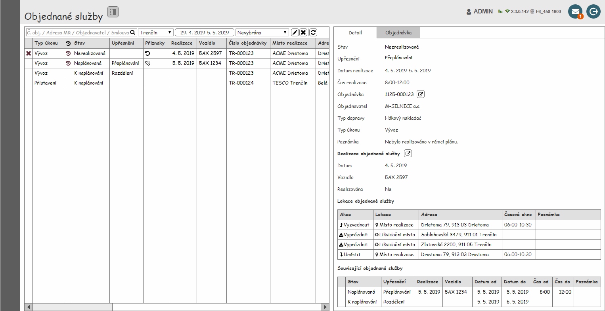
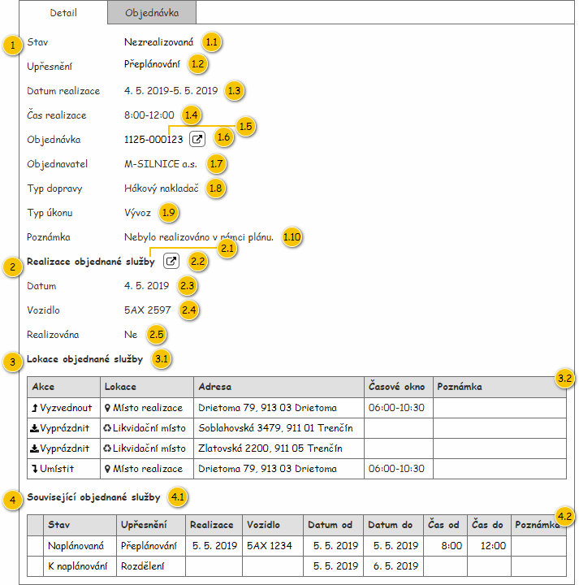

Panel Detail objednané služby slouží k zobrazení údajů o entitě Objednaná služba, která je vstupním parametrem panelu.
Jedná se o panel zobrazující detailní informace o Objednané službě, kdy je samotná Objednaná služba předána jako vstupní hodnota. Pokud není vstupní hodnota k dispozici, je zobrazen zástupný text: Není vybrána žádná objednaná služba.
Panel je tvořen jednotlivými kartami:
Nejdříve je zobrazen drátový diagram celé obrazovky se zobrazeným detailem, následně je karta s detailem podrobně popsána. Nadpis samotné karty je pak následující: Detail.


| Callout | Skupina |
|---|---|
| 1 | Informace o objednané službě |
| 2 | Informace o realizaci objednané služby |
| 3 | Informace o obsažených lokacích objednané služby |
| 4 | Informace o souvisejících objednaných službách |
Obsahuje detailní informace o Objednané službě.
| Callout | Komponenta | Nadpis | Typ komponenty | Příklad hodnoty | Hodnota | Výchozí hodnota | Formát | Zpřístupněná | Viditelná | Chování | Validace | Poznámka |
|---|---|---|---|---|---|---|---|---|---|---|---|---|
| 1.1 | Stav | Stav | Label | Nezrealizovaná | Entita Objednaná služba. | – | – | Vždy | – | – | – | |
| 1.2 | Upřesnění vzniku objednané služby | Upřesnění | Label | Přeplánování | Entita Objednaná služba. | – | – | Vždy | – | – | – | |
| 1.3 | Datum realizace | Datum realizace | Label | 4. 5. 2019-5. 5. 2019 | Entita Objednaná služba. | – | Pokud je Datum od roven Datum do: | – | Vždy | – | – | – |
| 1.4 | Čas realizace | Čas realizace | Label | 8:00-12:00 | Entita Objednaná služba. | – | <Čas realizace od>-<Čas realizace do> Pokud je Čas od roven 0:00 a zároveň Čas do roven 23:59:
| – | Vždy | – | – | – |
| 1.5 | Objednávka | Objednávka | Label | 1125-000123 | Entita Objednávka – atribut Objednávka entity Položka objednávky – atribut Položka objednávky entity Objednaná nádoba – atribut Objednaná nádoba entity Objednaný úkon– atribut Objednaný úkon entity Objednaná služba. | – | <Číslo objednávky> | – | Pokud má uživatel právo na zobrazení Objednávek (VIEW_RP_ORDERS, viz Oprávnění na typ entity). | – | – | – |
| 1.6 | Odkaz na objednávku | – | Button
| – | – | – | – | Vždy | Pokud má uživatel právo na zobrazení Objednávek (VIEW_RP_ORDERS, viz Oprávnění na typ entity). | Spustí 100UC03: Upravit objednávku, Na vstup UC jsou předány následující hodnoty:
| – | – |
| 1.7 | Zákazník | Objednavatel | Label | M – SILNICE a.s. | Entita Zákazník – atribut Objednavatel entity Objednávka – atribut Objednávka entity Položka objednávky – atribut Položka objednávky entity Objednaná nádoba – atribut Objednaná nádoba entity Objednaný úkon– atribut Objednaný úkon entity Objednaná služba. | – | – | Pokud má uživatel právo na zobrazení Zákazníků (VIEW_RP_CUSTOMERS, viz Oprávnění na typ entity). | – | – | – | |
| 1.8 | Typ dopravy | Typ dopravy | Label | Hákový nakladač | Entita Typ dopravy – atribut Typ dopravy entity Typ nádoby – atribut Typ nádoby entity Objednaná nádoba – atribut Objednaná nádoba entity Objednaný úkon – atribut Objednaný úkon entity Objednaná služba. | – | – | Vždy | – | – | – | |
| 1.9 | Typ úkonu | Typ úkonu | Label | Vývoz | Entita Objednaný úkon – atribut Objednaný úkon entity Objednaná služba. | – | – | Vždy | – | – | – | |
| 1.10 | Poznámka | Poznámka | Label | Nebylo realizováno v rámci plánu. | Entita Objednaná služba. | – | – | Vždy | – | – | – |
Obsahuje detailní informace o Realizaci denního výkonu – tedy informace o tom, jak byla Objednaná služba realizována.
Konkrétní instance entity Realizace denního výkonu je taková Realizace denního výkonu, ke které je Objednaná služba přiřazena. V případech, kdy Realizace denního výkonu není k dispozici, není skupina zobrazena vůbec.
| Callout | Komponenta | Nadpis | Typ komponenty | Příklad hodnoty | Hodnota | Výchozí hodnota | Formát | Zpřístupněná | Viditelná | Chování | Validace | Poznámka |
|---|---|---|---|---|---|---|---|---|---|---|---|---|
| 2.1 | Nadpis skupiny | – | Label | – | Realizace objednané služby | – | – | – | Pokud má uživatel právo na zobrazení Realizací denního výkonu (VIEW_RP_ROUTES_CONFIRMATION, viz Oprávnění na typ entity). Pokud je Denní výkon v jedno z uvedených stavů (atribut Stav):
| – | – | – |
| 2.2 | Odkaz na realizaci denního výkonu | – | Button
| – | – | – | – | Vždy | Pokud má uživatel právo na zobrazení Realizací denního výkonu (VIEW_RP_ROUTES_CONFIRMATION, viz Oprávnění na typ entity). Pokud je Denní výkon v jedno z uvedených stavů (atribut Stav):
| – | – | |
| 2.3 | Datum realizace | Datum | Label | 4. 5. 2019 | Entita Denní výkon – atribut Denní výkon entity Realizace denního výkonu – atribut Realizace denního výkonu entity Objednaná služba. | – | – | Pokud má uživatel právo na zobrazení Realizací denního výkonu (VIEW_RP_ROUTES_CONFIRMATION, viz Oprávnění na typ entity). Pokud je Denní výkon v jedno z uvedených stavů (atribut Stav):
| – | – | – | |
| 2.4 | Vozidlo | Vozidlo | Label | 5AX 2597 | Entita Denní výkon – atribut Denní výkon entity Realizace denního výkonu – atribut Realizace denního výkonu entity Objednaná služba. | – | Pokud není hodnota k dispozici a zároveň je k Dennímu výkonu přiřazeno Vozidlo (atribut Vozidlo), je zobrazen zástupný text: licensePlatePlaceholderText, viz Konfigurační hodnoty. | – | Pokud má uživatel právo na zobrazení Realizací denního výkonu (VIEW_RP_ROUTES_CONFIRMATION, viz Oprávnění na typ entity). Pokud je Denní výkon v jedno z uvedených stavů (atribut Stav):
| – | – | – |
| 2.5 | Informace o realizaci | Realizována | Label | Ne | Entita Realizace denního výkonu – atribut Realizace denního výkonu entity Objednaná služba. | – | Hodnota je dána dle stavu Objednané služby (atribut Stav):
| – | Pokud má uživatel právo na zobrazení Realizací denního výkonu (VIEW_RP_ROUTES_CONFIRMATION, viz Oprávnění na typ entity). Pokud je Denní výkon v jedno z uvedených stavů (atribut Stav):
| – | – | – |
Obsahuje základní informace o Lokacích objednané služby obsažených v Objednané službě (atribut Lokace objednané služby). Zobrazeny jsou pak pouze takové Lokace objednané služby, které splňují všechny dále uvedené podmínky zároveň:
| Callout | Komponenta | Nadpis | Typ komponenty | Příklad hodnoty | Hodnota | Výchozí hodnota | Formát | Zpřístupněná | Viditelná | Chování | Validace | Poznámka |
|---|---|---|---|---|---|---|---|---|---|---|---|---|
| 3.1 | Nadpis skupiny | – | Label | – | Lokace objednané služby | – | – | – | Vždy | – | – | – |
| 3.2 | Lokace objednané služby | – | Grid | – | Lokace objednané služby | – | – | – | Vždy | – | – | – |
Pro zobrazení záznamů v přehledu je použita běžná tabulka, viz 700UI01: Komponenty – tabulka. Z toho vyplývají jak její základní vlastnosti, tak i výchozí nastavení (např. počet záznamů, které je možné označit).
Tabulka je ve výchozím stavu řazena vzestupně dle pořadí Lokací objednané služby v rámci Objednané služby.
| Sloupec | Nadpis | Typ komponenty | Příklad hodnoty | Hodnota | Výchozí hodnota | Formát | Možnosti sloupce | Zpřístupněný | Viditelný | Chování | Validace | Poznámka |
|---|---|---|---|---|---|---|---|---|---|---|---|---|
| Akce v lokaci | Akce | TextBox | Vyzvednout | Entita Lokace objednané služby. | – | Konkrétní akce jsou doplněny ikonou, která je v barvě textu:
| – | Nikdy | Vždy | – | – | – |
| Typ lokace | Lokace | TextBox | Místo realizace | Entita Lokace objednané služby. | – | Konkrétní typy Lokace objednané služby jsou doplněny ikonou, která je v barvě textu:
| – | Nikdy | Vždy | – | – | – |
| Adresa | Adresa | TextBox | Drietoma 79, 913 01 Drietoma | Entita Adresa – atribut Adresa entity Lokace objednané služby. | – | Pokud není dostupné Číslo orientační:
Pokud není dostupné Číslo popisné:
| – | Nikdy | Vždy | – | – | – |
| Časové okno | Časové okno | TextBox | 6:00-10:30 | Entita Lokace objednané služby. | – | Pokud je Začátek časového okna roven 0:00 a zároveň Konec časového okna roven 23:59, není hodnota zobrazena. | – | Nikdy | Vždy | – | – | – |
| Poznámka | Poznámka | TextBox | Zavolat 30 minut předem. | Entita Lokace objednané služby. | – | – | Nikdy | Vždy | – | – | – |
Obsahuje základní informace o Objednaných službách, které vznikly z Objednané služby zobrazené v detailu. K dispozici jsou pak následující služby Objednané služby:
| Callout | Komponenta | Nadpis | Typ komponenty | Příklad hodnoty | Hodnota | Výchozí hodnota | Formát | Zpřístupněná | Viditelná | Chování | Validace | Poznámka |
|---|---|---|---|---|---|---|---|---|---|---|---|---|
| 4.1 | Nadpis skupiny | – | Label | – | Související objednané služby | – | – | – | Vždy | – | – | – |
| 4.2 | Související objednané služby | – | Grid | – | Související objednané služby | – | – | – | Vždy | – | – | – |
Pro zobrazení záznamů v přehledu je použita běžná tabulka, viz 700UI01: Komponenty – tabulka. Z toho vyplývají jak její základní vlastnosti, tak i výchozí nastavení (např. počet záznamů, které je možné označit).
Tabulka je ve výchozím stavu řazena vzestupně dle sloupce Datum realizace.
| Sloupec | Nadpis | Typ komponenty | Příklad hodnoty | Hodnota | Výchozí hodnota | Formát | Možnosti sloupce | Zpřístupněný | Viditelný | Chování | Validace | Poznámka |
|---|---|---|---|---|---|---|---|---|---|---|---|---|
| Realizována | – | TextBox | – | Entita Objednaná služba. | – | Hodnota je reprezentována ikonou dle stavu Objednané služby (atribut Stav):
| – | Nikdy | Vždy | Pokud je zobrazena ikona a uživatel na ni najede myší, je zobrazen ToolTip s dříve uvedeným textem. | – | – |
| Stav | Stav | TextBox | Naplánovaná | Entita Objednaná služba. | – | – | Nikdy | Vždy | – | – | – | |
| Datum realizace | Realizace | TextBox | 5. 5. 2019 | Entita Denní výkon – získání konkrétní instance se pak liší dle stavu Objednané služby (atribut Stav):
| – |
| – | Nikdy | Pokud má uživatel právo na zobrazení Denního výkonu(VIEW_RP_DAILY_ROUTES, viz Oprávnění na typ entity). Pokud má uživatel právo na zobrazení Realizace denního výkonu(VIEW_RP_ROUTES_CONFIRMATION, viz Oprávnění na typ entity). | – | – | – |
| Vozidlo | Vozidlo | TextBox | 5AX 1234 | Entita Denní výkon – získání konkrétní instance se pak liší dle stavu Objednané služby (atribut Stav):
| – | Pokud není hodnota k dispozici a zároveň je k Dennímu výkonu přiřazeno Vozidlo (atribut Vozidlo), je zobrazen zástupný text: licensePlatePlaceholderText, viz Konfigurační hodnoty. | – | Nikdy | Pokud má uživatel právo na zobrazení Denního výkonu(VIEW_RP_DAILY_ROUTES, viz Oprávnění na typ entity). Pokud má uživatel právo na zobrazení Realizace denního výkonu(VIEW_RP_ROUTES_CONFIRMATION, viz Oprávnění na typ entity). | – | – | – |
| Datum realizace od | Datum od | TextBox | 5. 5. 2019 | Entita Objednaná služba. | – |
| – | Nikdy | Vždy | – | – | – |
| Datum realizace do | Datum do | TextBox | 5. 6. 2019 | Entita Objednaná služba. | – |
| – | Nikdy | Vždy | – | – | – |
| Čas od | Čas od | TextBox | 8:30 | Entita Objednaná služba. | – | <Čas realizace od>
| – | Nikdy | Vždy | – | – | – |
| Čas do | Čas do | TextBox | 16:00 | Entita Objednaná služba. | – | <Čas realizace do>
| – | Nikdy | Vždy | – | – | – |
| Poznámka | Poznámka | TextBox | Zrušeno zákazníkem. | Entita Objednaná služba. | – | – | Nikdy | Vždy | – | – | – |
Detail Objednávky odpovídá již existujícímu panelu – viz 100UI03: Detail objednávky, na vstup jsou pak předány následující hodnoty:
Nadpis samotné karty je pak následující: Objednávka.
Pokud uživatel nemá právo na zobrazení Objednávek (VIEW_RP_ORDERS, viz Oprávnění na typ entity), není karta zobrazena vůbec.
| Odkaz | Stručný popis změny/doplnění |
|---|---|
| Lokace objednané služby | Doplněno chování pro nový typ lokace objednané služby (naznačeno modře). |
Provedeny změny v rámci celého dokumentu (naznačeno modře). Viz ID-040: Násobné rozdělení objednané služby.
| Odkaz | Stručný popis změny/doplnění |
|---|---|
| Lokace objednané služby | Upřesněny obecné informace o použité tabulce (naznačeno modře). |
| Související objednané služby | Upřesněny obecné informace o použité tabulce (naznačeno modře). |
| Odkaz | Stručný popis změny/doplnění |
|---|---|
| Informace o obsažených lokacích objednané služby | Doplněna kritéria pro zobrazení Lokací objednané služby (naznačeno modře). |
| Odkaz | Stručný popis změny/doplnění |
|---|---|
| Informace o realizaci objednané služby | Změněn zdroj hodnoty pro zobrazení SPZ odpovídajícího Vozidla (naznačeno modře). |
| Odkaz | Stručný popis změny/doplnění |
|---|---|
| Informace o objednané službě | Doplněn chybějící popis formátování pro datum a čas realizace (naznačeno modře). |